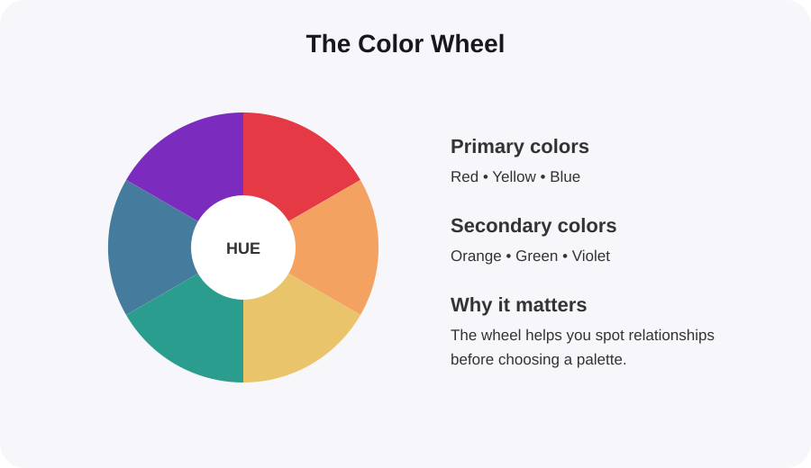
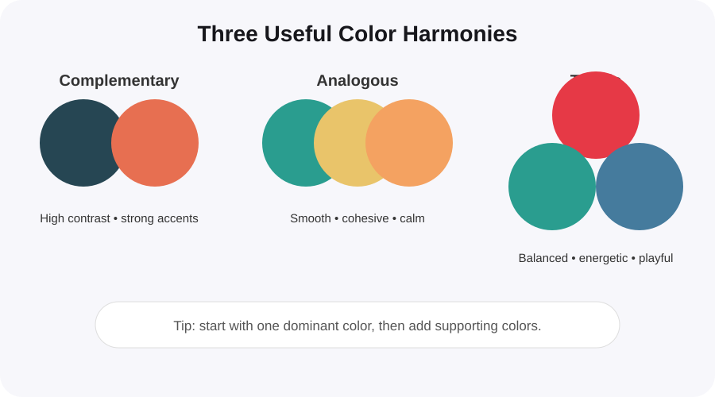
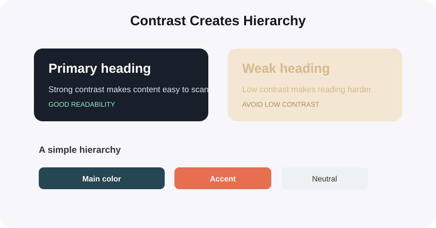

What Is Color Theory in Graphic Design?
Color theory is the practical system designers use to choose, combine and balance colors. It helps a design feel clear, intentional and emotionally appropriate.
Why does color theory matter?
Good color choices do more than make a design look attractive. They can guide attention, create hierarchy, communicate mood and make information easier to understand.
1. Start with the color wheel
The color wheel organizes hues so you can quickly see relationships between them. In traditional design education, the basic groups are primary, secondary and tertiary colors.

2. Learn a few useful color harmonies
You do not need to memorize every color rule. Start with three combinations that are useful in everyday graphic design:
- Complementary: opposite colors create strong contrast and are useful for calls to action.
- Analogous: neighboring colors create a smooth, cohesive look.
- Triadic: three evenly spaced colors can create a lively but balanced palette.

3. Use contrast to create hierarchy
Contrast tells the viewer what to notice first. A strong design usually has a clear primary color, supporting colors and neutral space rather than giving every color equal attention.

4. Think about color psychology — carefully
Colors can influence perception, but their meaning depends on context, culture and the surrounding colors. Instead of treating psychology as a fixed rule, use it as a design prompt.
- Red: energy, urgency, passion
- Blue: calm, trust, stability
- Green: nature, growth, freshness
- Yellow: optimism, warmth, attention
- Purple: creativity, luxury, imagination
5. Check readability before you finish
A beautiful palette is not useful if people cannot read the content. Test text against its background, especially for buttons, small labels and body copy.
- Use strong enough contrast for normal text.
- Do not rely on color alone to communicate meaning.
- Test the design in light and dark contexts when relevant.
- Keep decorative colors away from important text if they reduce readability.
A simple workflow for your next design
- Choose one main color that fits the brand or message.
- Add one supporting color using a harmony from the color wheel.
- Pick a neutral for backgrounds and body text.
- Add one accent color for important actions or highlights.
- Check contrast and remove any color that does not have a clear job.
Ready to experiment with color?
Use ColorPick's color wheel and palette tools to test combinations and find HEX values for your next design.
Explore the Color Wheel →